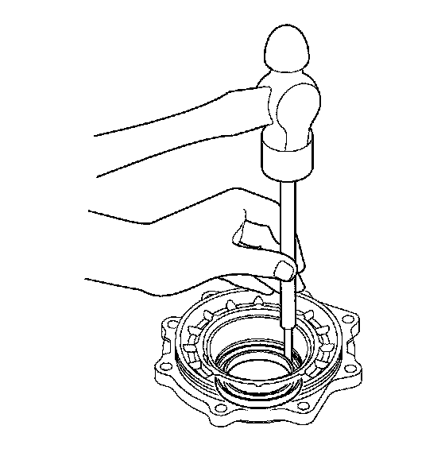
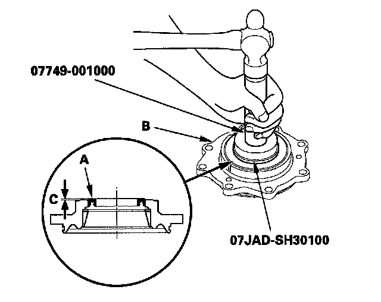

Transfer Cover Oil Seal Replacement
Transfer Cover Oil Seal ReplacementSpecial Tools Required
^ Driver 07749-0010000
^ Attachment, 65 mm 07JAD-SH30100
1. Remove the oil seal from the transfer cover.

2. Install the new oil seal (A) in the transfer cover (B) in height (C) of 0-1 mm (0-0.04 in.) above the cover surface using the driver and attachment (65 mm).
